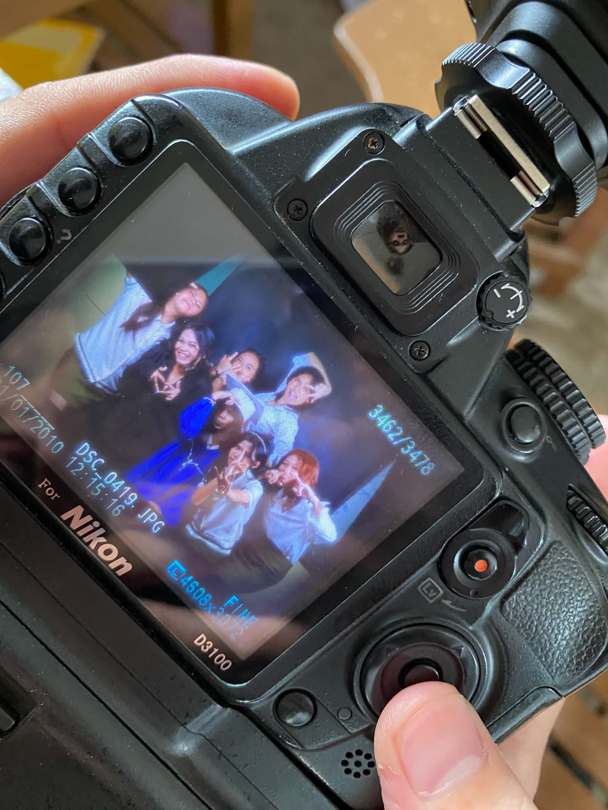

My senior high school days were filled with different experiences, challenges, and memories
that I will always carry with me.
At first, I thought senior high school would simply be about studying,
completing requirements, and preparing for the future.
But as time passed, I realized that it was
also about the people I met, the friendships I built, and the experiences that helped
me grow as a person.
I also remember the times when we had difficult projects and deadlines.
We would help each other, share ideas, and stay together until we finished our work.
Sometimes we were all tired and stressed, but we still tried to encourage one another.
We would remind each other to keep going because we all wanted to reach the same goal to
graduate together.
What means the most to me is how my friends made me feel valued.
There were times when I felt like my efforts were not enough, but they reminded me that
what I was doing mattered. Their words, support, and even their simple presence gave me motivation
and confidence. Because of them, I felt that I was important too. I learned that sometimes, we do not
need big things to make someone feel better.
Looking back now, I realize that the difficult moments were also some
of the moments that brought us closer. We struggled, laughed, worried, helped
each other, and grew together. I am very grateful that I experienced those moments
because they taught me the importance of friendship, kindness, and believing in myself.